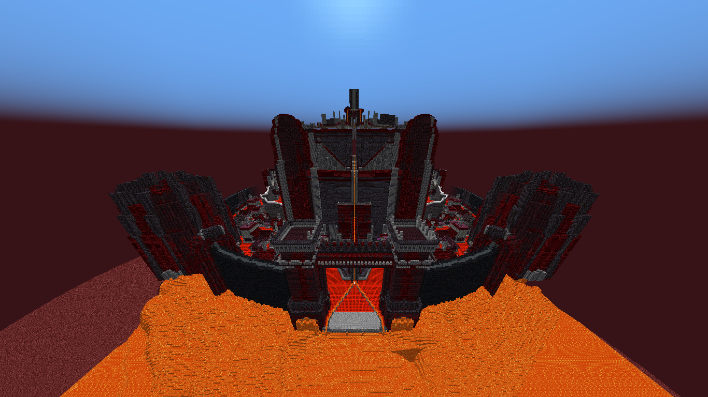
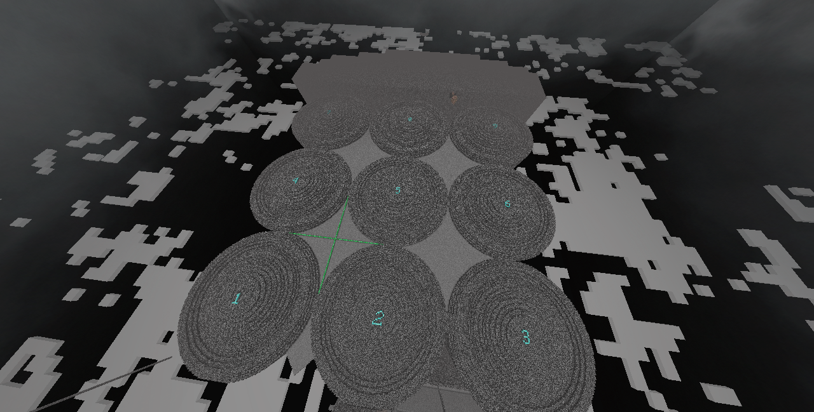
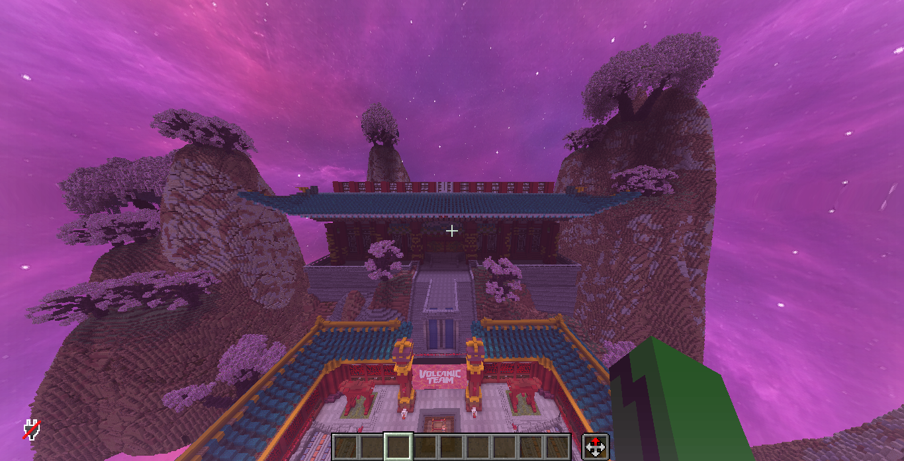
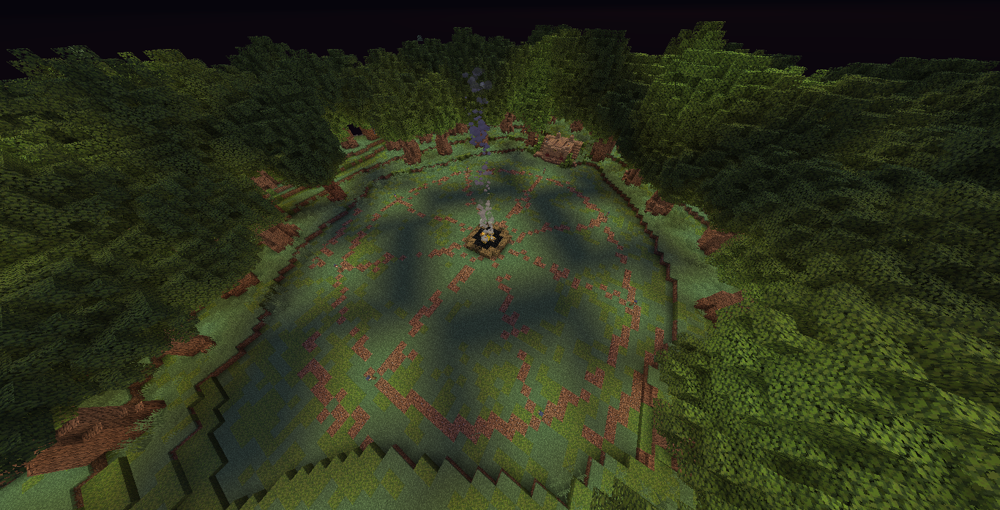

01
DEDSAFIO MINECRAFT II · INFERNO
Inferno
El castillo del Dedsafio Minecraft II. Recreado. Aún no está terminado, pero está muy avanzado.
MINECRAFT BUILDER
Soy constructor de Minecraft de nivel intermedio y me especializo en recrear construcciones a partir de referencias, series y proyectos.

MI FORMA DE CONSTRUIR
MI TRABAJO
Recreaciones y construcciones propias hechas en Minecraft.
RECREACIONES
Construcciones que recreo a partir de series, proyectos y referencias.

DEDSAFIO MINECRAFT II · INFERNO
El castillo del Dedsafio Minecraft II. Recreado. Aún no está terminado, pero está muy avanzado.

MORTAL KOMBAT · DEDSAFIO MINECRAFT II
Gulag de Mortal Kombat para Dedsafio Minecraft II.

DEDSAFIO MINECRAFT II · RECREACIÓN
La montaña donde los jugadores aparecen.
CONSTRUCCIONES PROPIAS
Construcciones que diseño desde cero. Aquí iremos agregando los próximos proyectos.
Esta sección ya está preparada para tus siguientes construcciones.
SOBRE MÍ
Me especializo en recrear construcciones de series famosas mediante directos completos. Intento que mis construcciones queden cerca de la referencia original, normalmente alrededor de un 80% en proporciones y tamaños, y siempre trato de meterles mi propio detalle.
CÓMO TRABAJO
Primero veo bien la referencia y saco las partes más importantes de la construcción.
Empiezo por las formas grandes para que la construcción tenga las proporciones correctas.
Después voy metiendo bloques, detalles, decoración y todo lo que le da vida.
Al final comparo todo con la referencia y voy corrigiendo lo que haga falta.
¿TIENES UN PROYECTO?
Si necesitas una construcción o una recreación para un proyecto de Minecraft, puedes contactarme.